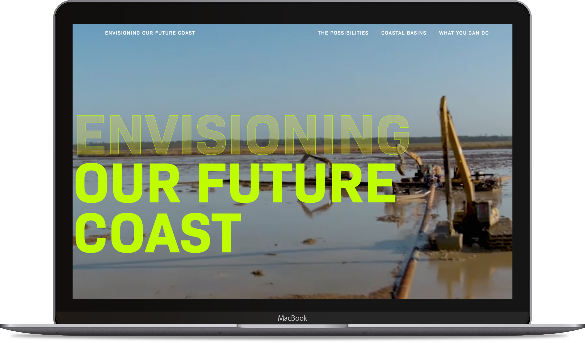
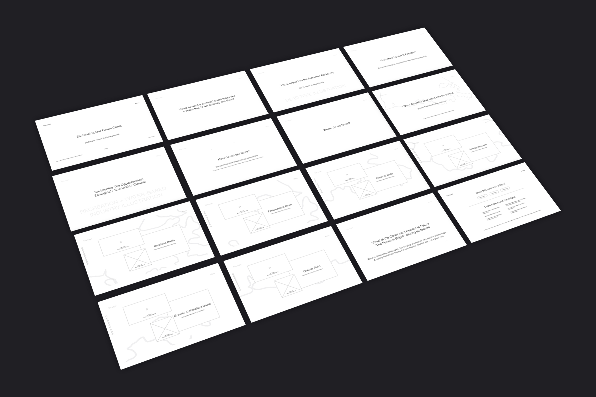
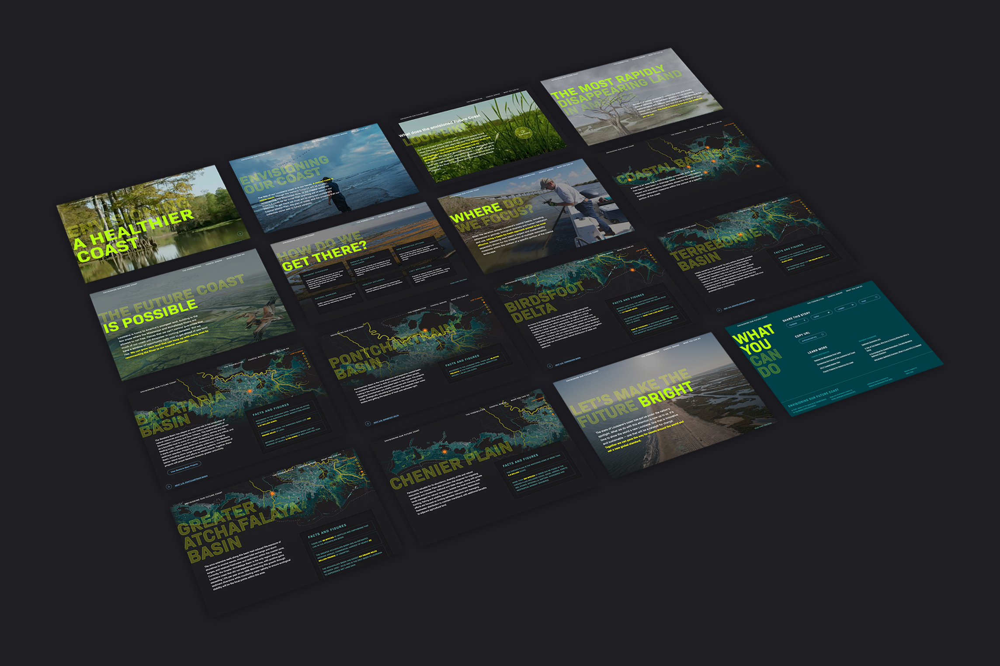
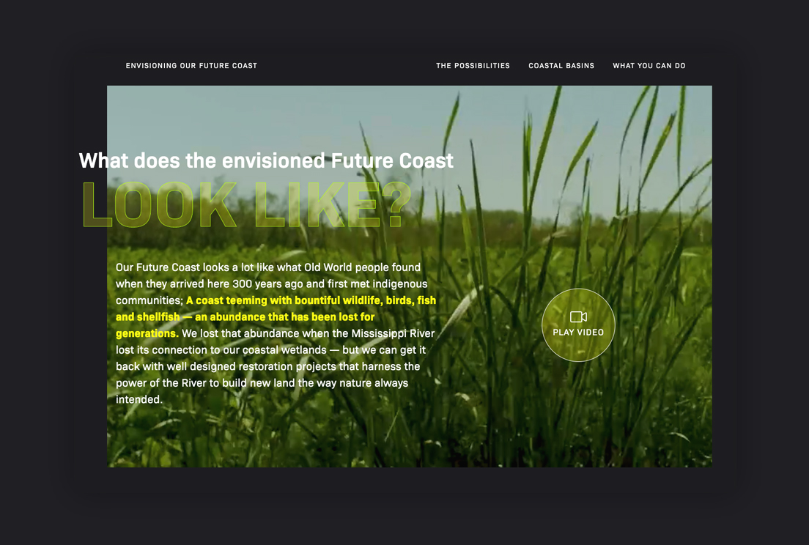
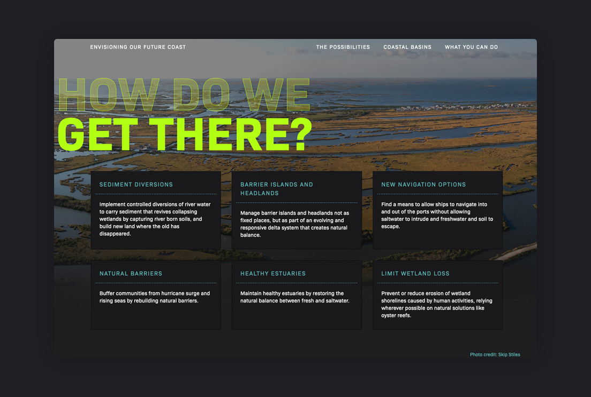
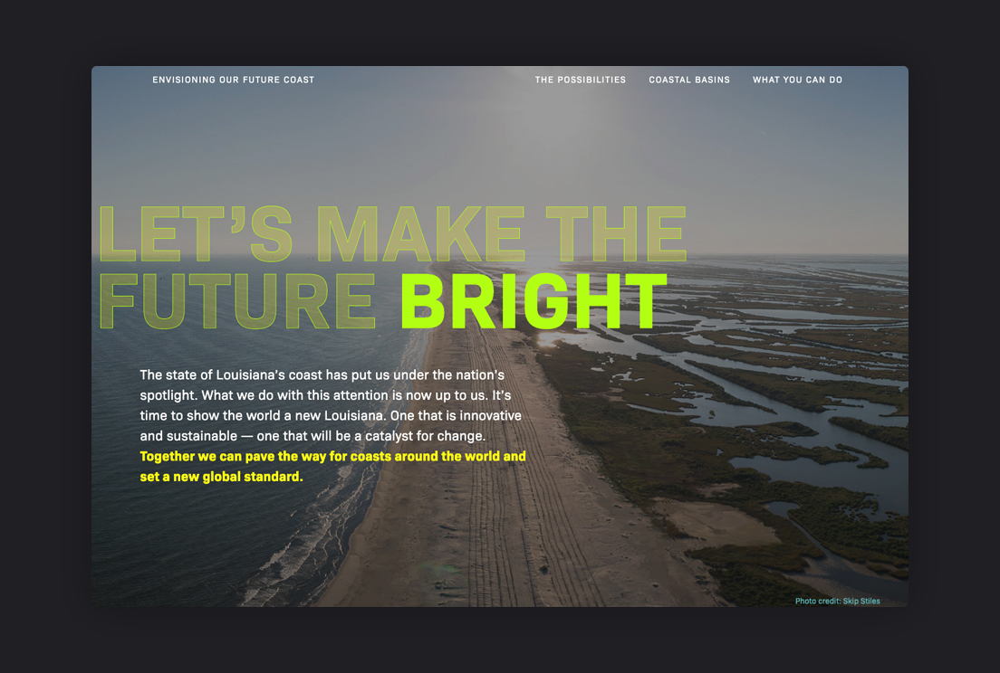
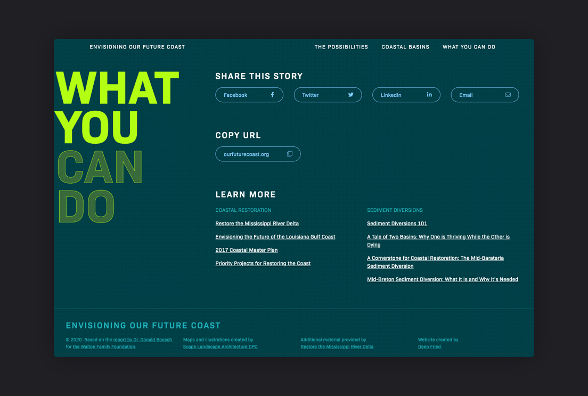
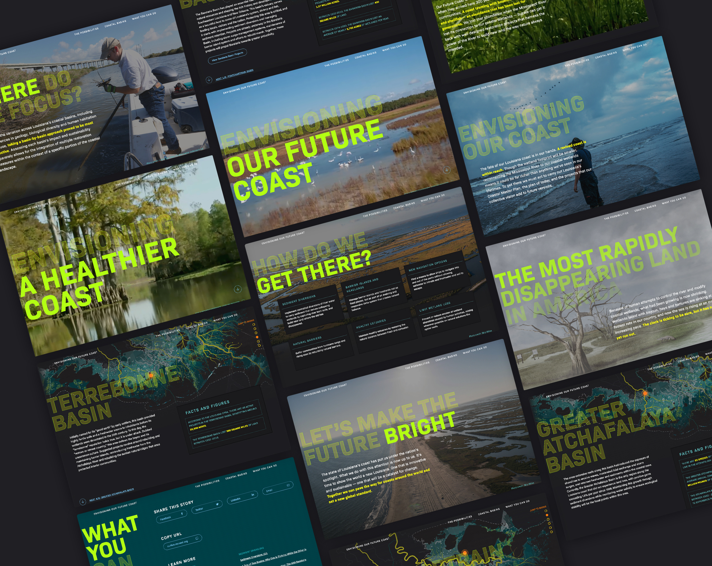

Envisioning Our Future Coast is a storytelling website with the purpose of awareness & education about the future of Louisiana's disappearing coastline. It's a project of the Walton Family Foundation with support from Restore the Mississippi River Delta. The website is based on WFF fellow Dr. Donald Boesch's groundbreaking report about the prospect of a smaller, yet productive coast in the decades to come. It tells one aspect of a much bigger story surrounding climate change, disappearing land, and coastal restoration.

- Client
- Walton Family Foundation
- Agency
- Deep Fried Advertising
- Years Active
- 2019-2020
- Role
- Lead Design, UX Strategy
- Work
- Website Design

The story we needed to tell is a complex one. As a result, a storyboard was created to map the content flow from beginning to end. Our goal was to keep the user interested without bogging them with overly-scientific information and lengthy content.

Once the storyboard was finalized, I began the design. My vision for the website was inspired by the drama of storytelling/awareness campaign websites. Dark, moody backgrounds with slow transitions allowed us to control the user's pace and create an immersive experience. Large, colorful imagery and videos of landscapes, wildlife, communities, and cultures bring the story to life and keep the user engaged. Bright neon colors and strong typography express the urgency of the situation.





The story is broken into three parts: 1) The issue Louisiana currently faces with coastal land loss as a result of man-made actions over the past century, the actions that need to be taken to stave off further erosion, and the possibilities for a hopeful and abundant future; 2) The six major basins of south Louisiana, their importance, and the restoration efforts that support their survival and; 3) Share-to-social tools and educational references.
This was one of the most rewarding projects I've worked on. Experience it for yourself at OurFutureCoast.org
 2020 American Web Design Award
2020 American Web Design Award
